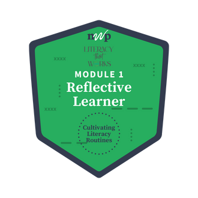

Home

One strategy from this module that I plan to try with my students is the writing sprints.
I anticipate challenges from students who don’t like to dig in and actually do much thinking, especially if the prompts given are more educational or “studious” in nature. I think it will go over better if the first few times they’re given a bit more freedom with their writing, and if the prompts are more personal in nature rather than the academic topics I hope to get to at some point.
I could definitely see myself using this at the end of a lesson, module, or unit, allowing time for students to process all the information they’ve encountered; thinking more on it now, perhaps this would be a good weekly exit ticket-type activity, where students can simply summarize everything they’ve learned through the week…